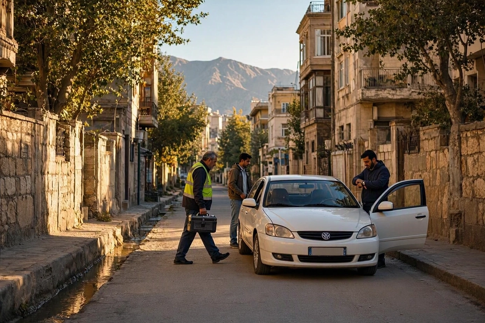
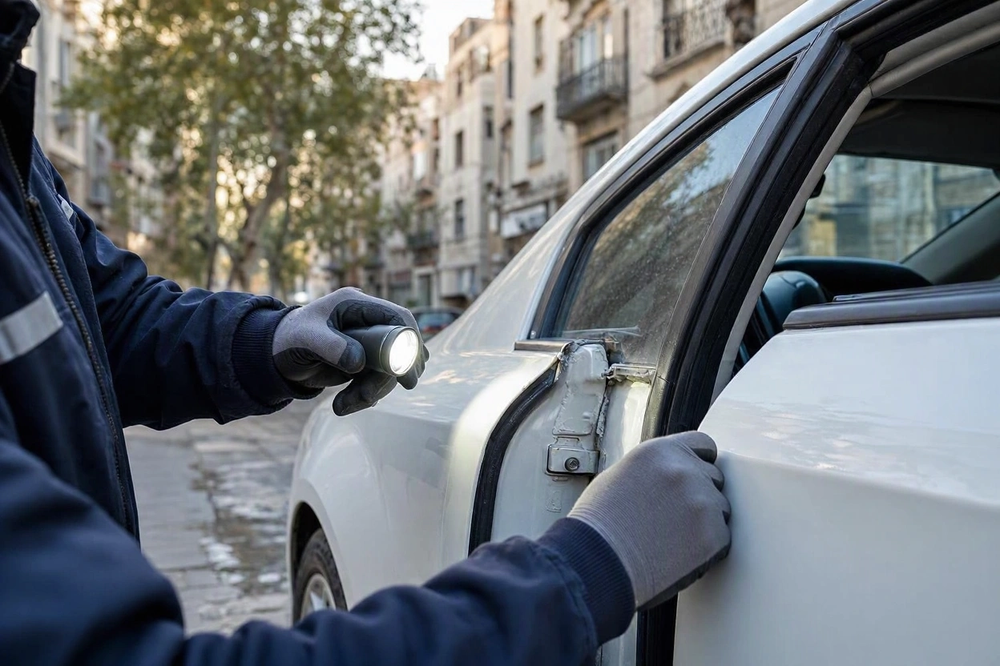
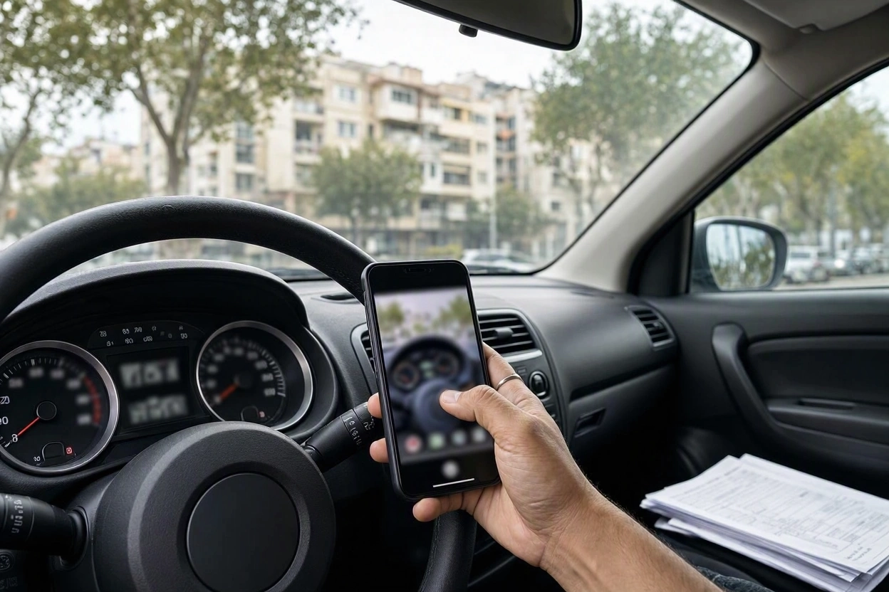
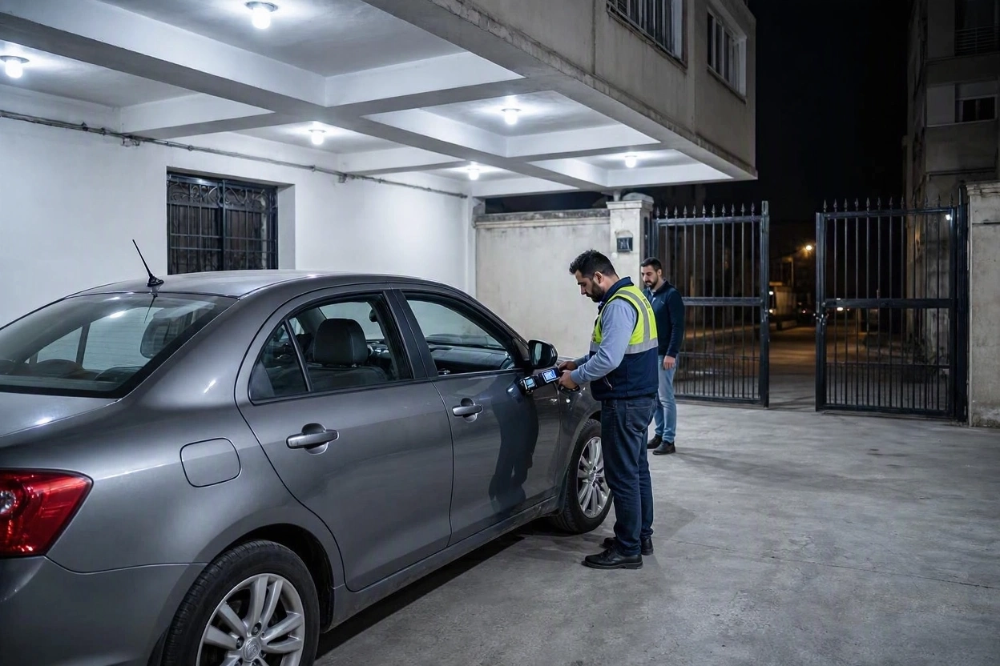

کارشناسی خودرو فوری؛ چطور سریع برای خرید ماشین کارشناس بگیریم؟
پنجشنبه عصر است. یک تارای سفید با قیمت مناسب در پیروزی پیدا کردهاید و فروشنده پشت تلفن میگوید «تا امشب جواب بدهید، فردا صبح یک نفر دیگر میآید». حالا دو راه دارید: یا بدون کارشناسی تصمیم بگیرید، یا در چند ساعت باقیمانده کارشناس بگیرید و هنوز هم درست تصمیم بگیرید.
راه دوم شدنی است، به شرطی که بدانید از کجا شروع کنید. ما در کارماچک بارها با خریدارانی روبهرو شدهایم که برای همان روز کارشناسی میخواهند. در این راهنما میگوییم کارشناسی خودرو فوری را چطور سریع و بدون قربانی کردن دقت هماهنگ کنید، و در وقت کم کدام بخشها را هرگز حذف نکنید.
برای کارشناسی خودرو فوری، اول با فروشنده ساعت و آدرس را قطعی کنید و بخواهید خودرو روشن نشود، بعد با مدل دقیق، آدرس و بازهی زمانی رزرو کنید. اگر وقت کم است، شاسی، تطبیق مدارک، رنگ بدنه، دیاگ و استارت سرد را حذف نکنید. تا گزارش کارشناس را ندیدهاید، هیچ بیعانهای پرداخت نکنید.
خلاصه در یک دقیقه
- سرعت کارشناسی فوری بیشتر از آنکه به کارشناس بستگی داشته باشد، به آماده بودن اطلاعات شما و هماهنگی با فروشنده بستگی دارد.
- یک پیام کوتاه به فروشنده، شامل ساعت، آدرس و درخواست روشن نکردن خودرو، نیمی از کار را جلو میاندازد.
- در وقت کم، اولویت با بخشهایی است که بعداً قابل جبران نیستند: شاسی، هویت خودرو و رنگ بدنه.
- بیشتر فوریتهایی که فروشنده میسازد، واقعی نیستند. فروشندهای که حتی دو ساعت برای کارشناسی صبر نمیکند، یک علامت هشدار است.
- کارشناسی سریع یعنی هماهنگی سریع، نه بررسی نصفهنیمه.
کارشناسی فوری کی واقعا لازم است؟
کارشناسی خودرو فوری یعنی هماهنگی و انجام کارشناسی در همان روز یا چند ساعت بعد از پیدا کردن خودرو. بعضی وقتها این عجله واقعی است و بعضی وقتها ساختهی فروشنده. تشخیص این دو از هم، اولین تصمیم شماست.
| فوریت واقعی | فوریت ساختگی |
|---|---|
| فروشنده مسافر است و تاریخ سفرش مشخص است | «یک نفر دیگر بیعانه آورده» بدون هیچ نشانهی روشنی |
| قیمت آگهی بهوضوح پایینتر از بازار است و تماسهای زیادی میگیرد | «اگر الان قول ندهید، قیمت بالا میرود» |
| خودرو در نمایشگاه است و ممکن است همان روز فروش برود | «کارشناس لازم نیست، خودم تأیید میکنم» |
| شما فقط امروز فرصت دیدن خودرو را دارید | اصرار به پرداخت بیعانه برای «نگه داشتن» خودرو |
اگر قیمت پایین دلیل عجلهی شماست، اول مطمئن شوید واقعاً پایین است. یک نگاه سریع به قیمتگذاری خودرو نشان میدهد قیمت آگهی با بازار همان مدل و کارکرد چقدر فاصله دارد. قیمتی که خیلی پایینتر از بازار است، گاهی دلیلش ایرادی است که کارشناسی باید پیدا کند.
رزرو سریع در ۵ دقیقه؛ چه اطلاعاتی آماده کنید
بیشترین زمانی که در کارشناسی فوری هدر میرود، رفتوبرگشت اطلاعات است: آدرس ناقص، مدل نامعلوم، ساعتی که فروشنده هنوز تأیید نکرده. برای اینکه کارشناسی خودرو در محل همان روز انجام شود، ترتیب درست این است:
- اول فروشنده:پیش از رزرو، ساعت و آدرس را با فروشنده قطعی کنید. رزرو بدون تأیید فروشنده، اولین دلیل لغو کارشناسیهای فوری است.
- مدل دقیق خودرو:نام، تیپ، سال ساخت و نوع گیربکس. این اطلاعات نوع ابزار و دیاگ مورد نیاز را مشخص میکند.
- آدرس دقیق با لوکیشن:نشانی کامل، پلاک ساختمان و اگر خودرو در پارکینگ است، طبقه و نحوهی دسترسی.
- نوع کارشناسی:بدنه، فنی یا کامل. برای خرید، کارشناسی کامل انتخاب منطقیتری است.
- بازهی زمانی منعطف:به جای یک ساعت دقیق، یک بازهی دوساعته بدهید تا هماهنگی سریعتر شود.
همین امروز کارشناس را هماهنگ کنید
مدل خودرو، آدرس و بازهی زمانی را آماده کنید و درخواست را ثبت کنید. هرچه اطلاعات کاملتر باشد، هماهنگی سریعتر انجام میشود.
ثبت درخواست کارشناسی خودرو در محلپیام آماده برای فروشنده
یک پیام روشن، هم کار را سریع میکند و هم به فروشنده نشان میدهد خریدار جدی هستید. این متن را با اطلاعات خودتان کامل کنید و بفرستید:
سه جملهی این پیام کار اصلی را میکنند. «هزینه با خودم است» مقاومت فروشنده را کم میکند. «روشن نکنید» امکان دیدن استارت سرد را حفظ میکند. درخواست مدارک هم یعنی تطبیق هویت خودرو همان روز انجام میشود.
وقت کم است؛ کدام بخش ها نباید حذف شوند؟
کارشناسی فوری قرار نیست کوتاهتر از کارشناسی معمولی باشد؛ فقط زودتر انجام میشود. اما اگر فروشنده واقعاً زمان محدودی دارد، این جدول نشان میدهد کدام بخشها را به هیچ وجه نباید حذف کرد و کدام را میشود بعداً تکمیل کرد:
| اولویت | بخش | چرا |
|---|---|---|
| حذفنشدنی | شاسی، ستونها و سینی جلو | آسیب شاسی بیشترین اثر را روی ایمنی و ارزش دارد و با هیچ تعمیری جبران کامل نمیشود |
| حذفنشدنی | تطبیق شماره شاسی و موتور با مدارک | مغایرت هویتی یعنی مشکل حقوقی، نه فنی |
| حذفنشدنی | رنگ و بدنه با ضخامتسنج | پایهی اصلی قیمتگذاری خودرو دستدوم در بازار ایران |
| حذفنشدنی | استارت سرد و دیاگ | نشانههای استارت سرد بعد از گرم شدن موتور از بین میروند و دیگر قابل تکرار نیستند |
| مهم | تست رانندگی | رفتار گیربکس و جلوبندی فقط در حرکت دیده میشود |
| قابل تکمیل بعدی | بررسی روی بالابر یا تست کمپرس | اگر نشانهی مشکوکی دیده شد، پیش از قولنامه قابل انجام است |

تا رسیدن کارشناس، شما چه کار کنید؟
زمان انتظار برای رسیدن کارشناس، زمان مرده نیست. این کارها را خودتان انجام دهید تا وقت کارشناس صرف بخشهای تخصصی شود:
- دست روی کاپوت بگذارید تا مطمئن شوید موتور سرد است.
- کارت، سند و بیمهنامه را ببینید و نام مالک را با فروشنده تطبیق دهید.
- از کیلومترشمار، مدارک و چهار طرف خودرو عکس بگیرید.
- زمین زیر خودرو را برای لکهی روغن یا مایع نگاه کنید.
- کد DOT لاستیکها را بخوانید تا سن لاستیکها را بدانید.
- از فروشنده بخواهید جلوی شما استعلام خلافی بگیرد.
بعد از گزارش هم عجله نکنید. مسیر تصمیمگیری بعد از کارشناسی، از چانهزنی تا بندهای ضروری قولنامه، را در چک لیست طلایی قبل از قولنامه آوردهایم.

کارشناسی فوری در شب، جمعه یا روز بارانی
خیلی از کارشناسیهای فوری در زمانهایی درخواست میشوند که شرایط ایدهآل نیست: شب، تعطیلی آخر هفته یا روز بارانی. کارشناسی در این شرایط ممکن است، اما باید بدانید کدام بخش ضعیفتر میشود.
- شب: ضخامتسنج و دیاگ مثل روز کار میکنند، اما بررسی چشمی رنگ، به خصوص سپرها و اختلاف رنگ قطعهها، سختتر میشود. پارکینگ سرپوشیده با نور سفید یکنواخت را به کوچه ترجیح دهید.
- روز بارانی: لایهی آب روی بدنه اختلاف رنگ را میپوشاند. کارشناسی فنی و دیاگ ممکن است، اما قضاوت نهایی رنگ را به فضای سرپوشیده بسپارید.
- جمعه و تعطیلات: هماهنگی را زودتر شروع کنید و بازهی زمانی منعطفتری بدهید.
این شرایط و راهحل هر کدام را در مطلب دقت و محدودیتهای کارشناسی در محل با جزئیات بیشتری توضیح دادهایم.

عجله فروشنده را چطور مدیریت کنیم؟
نکته مهم اینجاست: فشار زمانی فروشنده فقط وقتی کار میکند که شما بترسید خودرو را از دست بدهید. چند جملهی ساده این فشار را بدون بحث خنثی میکند:
- «من خریدار جدی هستم و کارشناس را برای امروز هماهنگ کردهام.» این جمله نشان میدهد عجلهی فروشنده را جدی گرفتهاید.
- «بیعانه را بعد از گزارش کارشناس میدهم.» این قاعده را از اول بگویید تا بعداً بحث نشود.
- «اگر قبل از کارشناس مشتری دیگری آمد، اشکالی ندارد.» خریداری که از دست دادن خودرو را میپذیرد، در موقعیت قویتری قرار دارد.
راستش را بخواهید، خودرویی که فروشندهاش دو ساعت برای کارشناسی صبر نمیکند، معمولاً خودرویی نیست که ارزش ریسک داشته باشد. کارماچک یک مجموعهی ارائهدهندهی خدمات کارشناسی خودرو در ایران است و گزارشهایش را برای همین لحظهی تصمیم مینویسد: فقط ایراد خودرو را شناسایی نمیکنیم؛ اثر آن روی هزینه تعمیر و ارزش واقعی معامله را هم مشخص میکنیم.
اشتباه های رایج در کارشناسی عجولانه
- پرداخت بیعانه برای «نگه داشتن» خودرو: بیعانهی پیش از کارشناسی، قدرت چانهزنی شما را از بین میبرد.
- قبول کارشناس پیشنهادی فروشنده برای صرفهجویی در وقت: کارشناس باید فقط به خریدار جواب پس بدهد.
- کارشناسی فقط رنگ به جای کارشناسی کامل: برای سریعتر شدن، بخش فنی را حذف نکنید. ایرادهای موتور و گیربکس گرانترند.
- رزرو قبل از تأیید فروشنده: کارشناس میرسد، فروشنده نیست، و وقت هر دو طرف هدر میرود.
- قبول گزارش شفاهی: در عجله هم گزارش کتبی با عکس بخواهید؛ این گزارش بعداً پیوست قولنامه میشود.
- تصمیم همان لحظه زیر فشار: بعد از گزارش، حتی نیم ساعت فکر کردن و مقایسهی قیمت، فرق تصمیم عجولانه با تصمیم درست است.
جمع بندی: کارشناسی خودرو فوری، سریع اما کامل
کارشناسی خودرو فوری با سه کار ساده سریع میشود: تأیید ساعت و آدرس با فروشنده پیش از رزرو، آماده داشتن مدل دقیق خودرو، و یک پیام روشن که روشن نکردن موتور و آماده بودن مدارک را بخواهد. در وقت کم هم شاسی، هویت خودرو، رنگ بدنه، دیاگ و استارت سرد را حذف نکنید.
عجلهی فروشنده را با یک قاعدهی ساده مدیریت کنید: بیعانه فقط بعد از گزارش. اگر خودروی مورد نظرتان را پیدا کردهاید، کارشناسی خودرو در محل را با اطلاعات کامل هماهنگ کنید.
قبل از تصمیم، گزارش کارشناس را ببینید
مدل خودرو، آدرس و بازهی زمانی را ثبت کنید. کارشناس کارماچک خودرو را در همان محل بررسی میکند و گزارش کتبی تحویل میدهد تا با اطلاعات کامل تصمیم بگیرید.
رزرو کارشناسی خودرو در محلسؤالات متداول
کارشناسی خودرو فوری با کارشناسی معمولی فرقی دارد؟
از نظر محتوای بررسی نباید فرقی داشته باشد. تفاوت در زمان هماهنگی است: کارشناسی فوری همان روز یا چند ساعت بعد از درخواست انجام میشود. کارشناسی که برای سریعتر شدن، بخشهایی مثل شاسی یا دیاگ را حذف کند، دیگر کارشناسی کامل نیست.
برای کارشناسی فوری چه اطلاعاتی لازم است؟
مدل، تیپ و سال ساخت خودرو، نوع گیربکس، آدرس دقیق با لوکیشن، بازهی زمانی مورد نظر و نوع کارشناسی. مهمتر از همه، پیش از ثبت درخواست ساعت و آدرس را با فروشنده قطعی کنید تا کارشناسی لغو یا جابهجا نشود.
اگر فروشنده برای کارشناسی صبر نکند چه کنم؟
فروشندهای که حتی چند ساعت برای کارشناسی مستقل صبر نمیکند، معمولاً دلیلی برای این عجله دارد. پیشنهاد دهید هزینه را خودتان بدهید و کارشناسی در محل خودش انجام شود. اگر باز هم نپذیرفت، خرید بدون کارشناسی ریسکی است که بهتر است قبول نکنید.
کارشناسی فوری در شب دقیق است؟
بخش فنی، دیاگ و اندازهگیری با ضخامتسنج در شب هم دقیق است. اما بررسی چشمی رنگ و سپرها زیر نور کوچه سختتر میشود. اگر ناچار به بازدید شبانه هستید، پارکینگ سرپوشیده با نور سفید و یکنواخت را انتخاب کنید و در صورت شک، بررسی رنگ را در روز تکرار کنید.
میشود قبل از کارشناسی بیعانه کمی داد تا ماشین نگه داشته شود؟
بهتر است نه. حتی بیعانهی کم، اگر گزارش کارشناسی ایراد نشان دهد، شما را وارد بحث پس گرفتن پول میکند و قدرت چانهزنی را کم میکند. اگر فروشنده اصرار دارد، این را بهعنوان یک علامت هشدار در نظر بگیرید.
در کارشناسی فوری خودم باید حضور داشته باشم؟
حضور خریدار توصیه میشود، چون میتوانید همان لحظه سؤال بپرسید و یافتهها را روی خودرو ببینید. اگر نمیتوانید برسید، از کارشناس بخواهید گزارش کتبی با عکس از هر یافته تحویل دهد و قبل از هر تصمیمی گزارش را با هم مرور کنید.